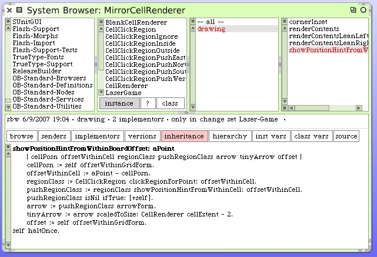
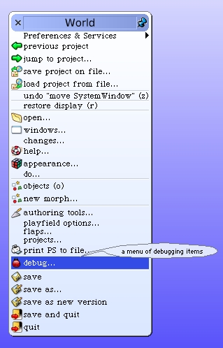
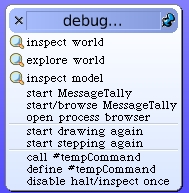

Using "Halt Once"
My concern here, as we saw when logging to the Transcript earlier, is that we will receive many "hint" messages in a row. Until we are sure this works, we really only want to draw the tiny arrow once. So we need to write a little "trap" into our code so that we only draw the hint arrow the first time.
When I began to write Graphical User Interface code with Digitalk's much loved Smalltalk/V back in the late 1980's, I wrote a troubleshooting enhancement called "Halt Once". In 2004 I published it for the Squeak community. The original enhancement code for Squeak can still be found here. However you do not need to install it. It's now built-in to Squeak 3.9. We're going to use it.
Instead of adding "self halt" to the code, we add "self haltOnce". Like this.
To turn it on we "enable" it from the debug menu.

When the code executes it will halt the first time it hits this statement. It then immediately disables the Halt Once switch and allows later passes through the code to resume without stopping. Hence, we'll get to see the state of things the first time an arrow is called-up.
By the way, you can always see the state of the Halt Once flag by examining the debug menu. If the trigger is set the menu will show the option to turn it off.
